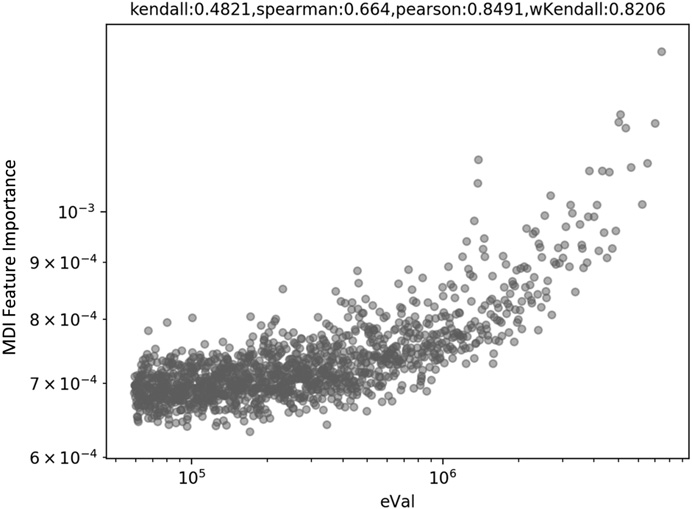
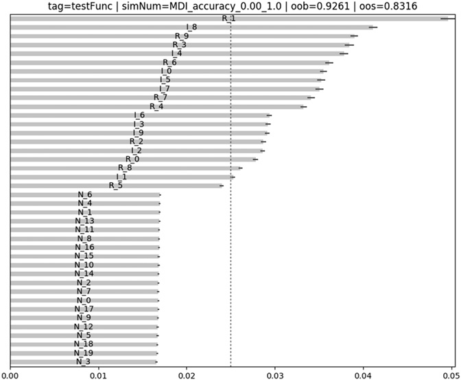
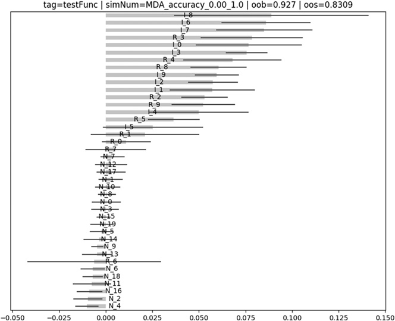
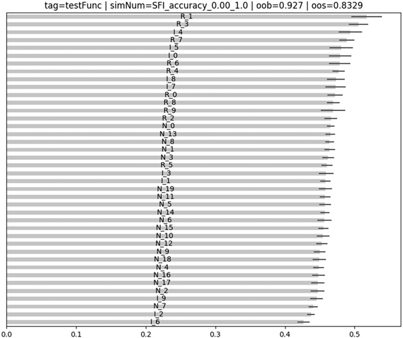

第二部分：建模
特征重要性
8.1 动机
金融研究中最常见的错误之一，是拿到一些数据后交给 ML 算法处理，再回测预测结果；如果结果不好看，就不断重复，直到出现一份漂亮的回测。学术期刊里充斥着这类伪发现，就连大型对冲基金也经常掉进这个陷阱。即便采用滚动前推的样本外回测，也不能解决问题：在同一份数据上反复检验，很可能产生虚假发现。统计学家对这种方法论错误深恶痛绝，甚至把它视为科研欺诈；美国统计协会也在伦理指南中对此提出警告（American Statistical Association [2016]，讨论 #4）。在常用的 5% 显著性水平（假阳性率）下，通常反复尝试约 20 次，就能“发现”一个虚假的投资策略。本章将说明这种做法为什么浪费时间和金钱，以及如何改用特征重要性分析。
8.2 特征重要性为何重要
金融业有一个令人吃惊的现象：许多经验丰富的投资组合经理，包括不少量化背景深厚的人，并没有意识到回测有多容易过拟合。本章不讨论如何正确回测；第 11～15 章会详细介绍这一极其重要的主题。本章要讲的是任何回测之前都必须完成的一项分析。
假设你拿到一对矩阵 \((X,y)\)，它们分别包含某个金融工具的特征和标签。我们可以在 \((X,y)\)上拟合分类器，并像第 7 章那样，通过经过清除处理的 \(k\)折交叉验证（CV）评估泛化误差。假设模型表现不错，接下来自然要问：哪些特征带来了这种表现？也许可以加入一些特征，强化分类器预测能力所依赖的信号；也许可以删掉一些只会给系统增加噪声的特征。
理解特征重要性，能帮助我们打开所谓的“黑箱”。只要弄清哪些信息来源对分类器不可或缺，就能看懂分类器识别出的模式。因此，质疑 ML 的人常把“黑箱”问题说得过了头。没错，算法在没有人工指挥的情况下自行学习——这正是 ML 的意义——但这不表示我们不能或不该查看算法究竟发现了什么。
找出重要特征后，还可以通过一系列实验继续深挖：这些特征始终重要，还是只在特定环境下重要？是什么触发了重要性随时间变化？能否预测这种状态切换？这些重要特征对相关金融工具是否也有用？对其他资产类别呢？在所有金融工具中，哪些特征最重要？整个投资范围内，哪个特征子集的排名相关性最高？用这种方式研究策略，远胜于反复试回测的愚蠢循环。下面这条准则，是我希望你从本书学到的最重要经验之一：
“Backtesting is not a research tool. Feature importance is.”
—Marcos López de Prado
Advances in Financial Machine Learning (2018)8.3 受替代效应影响的特征重要性
我认为，可以按特征重要性方法是否受替代效应影响来分类。这里的替代效应，是指其他相关特征的存在会压低某个特征的估计重要性。它相当于统计学和计量经济学所说的“多重共线性”。处理线性替代效应的一种办法，是先对原始特征做主成分分析（PCA），再对得到的正交特征做重要性分析。更多细节参见 Belsley 等人 [1980]、Goldberger [1991，第 245～253 页] 和 Hill 等人 [2001]。
8.3.1 平均不纯度下降
平均不纯度下降（MDI）是一种计算很快的解释型特征重要性方法，使用样本内（IS）数据，只适用于 RF 等树模型分类器。在每棵决策树的每个节点上，入选特征都会划分该节点收到的样本子集，从而降低不纯度。
由此，对每棵树都可以计算总不纯度下降中有多少应归于各个特征。森林包含多棵树，所以可以对所有估计器的结果取平均，再据此给特征排序。详细说明参见 Louppe 等人 [2013]。使用 MDI 时需要特别注意以下几点：
- 当树模型持续偏爱某些特征、系统性忽略其他特征时，就会出现遮蔽效应。为避免这种情况，使用 sklearn 的 RF 类时请设置
max_features=int(1)。这样每一层只随机考虑一个特征。- 这样，每个特征都有机会在某棵随机树的某个随机层级上降低不纯度。
- 不要把重要性为 0 的结果计入平均值，因为 0 只表示该特征没有被随机抽到。应把这些值替换为
np.nan。
- 这种方法显然使用样本内数据。即使特征毫无预测能力，也会得到一定的重要性。
- MDI 无法推广到非树模型分类器。
- MDI 的一个良好性质是：所有特征重要性之和为 1，而且每个特征的重要性都在 0 到 1 之间。
- 存在相关特征时，这种方法无法处理替代效应。可互换的替代特征会分摊重要性，因此 MDI 会低估它们：两个完全相同的特征被选中的概率相等，各自的重要性便会减半。
- Strobl 等人 [2007] 通过实验表明，MDI 会偏向某些预测变量。White 和 Liu [1994] 认为，对单棵决策树而言，这种偏差源于常用不纯度函数会让类别数量较多的预测变量获得不公平优势。
sklearn 的 RandomForest类默认用 MDI 作为特征重要性分数。之所以这样设计，很可能是因为 MDI 能在模型训练过程中直接计算，而且计算成本很低。1代码清单 8.2 给出了一种 MDI 实现，并纳入了前面列出的注意事项。
def featImpMDI(fit,featNames):
# feat importance based on IS mean impurity reduction
df0={i:tree.feature_importances_ for i,tree in enumerate(fit.estimators_)}
df0=pd.DataFrame.from_dict(df0,orient='index')
df0.columns=featNames
df0=df0.replace(0,np.nan) # because max_features=1
imp=pd.concat({'mean':df0.mean(),'std':df0.std()*df0.shape[0]**-.5},axis=1)
imp/=imp['mean'].sum()
return imp8.3.2 平均准确率下降
平均准确率下降（MDA）是一种计算较慢的预测型特征重要性方法，使用样本外（OOS）数据。其步骤是：第一，拟合分类器；第二，用某种评分指标（准确率、负对数损失等）计算样本外表现；第三，每次打乱特征矩阵（X）的一列，并在每次打乱后重新计算样本外表现。某个特征的重要性取决于打乱该列后造成的性能损失。需要注意以下几点：
- 这种方法适用于任何分类器，并不局限于树模型。
- MDA 的评分指标并非只能用准确率。例如，在元标签化应用中，我们可能更愿意用 F1 而不是准确率给分类器评分（解释见第 14 章第 14.8 节）。因此，“置换重要性”其实是更准确的名称。如果评分函数不对应一个度量空间，MDA 结果只应当用来排序。
- 与 MDI 一样，存在相关特征时，MDA 也会受到替代效应影响。面对两个完全相同的特征，MDA 总会把其中一个视为另一个的冗余项。遗憾的是，即使这两个特征都至关重要，MDA 也会让它们看起来完全无关。
- 与 MDI 不同，MDA 可能得出所有特征都不重要的结论，因为它依据的是样本外表现。
- 出于第 7 章所述原因，CV 必须执行清除重叠样本和禁运期处理。
代码清单 8.3 实现了带样本权重的 MDA 特征重要性计算，采用经过清除处理的 \(k\)折 CV，并用负对数损失或准确率评分。它把“未打乱特征相对于打乱特征所带来的性能提升”与理论最高分（负对数损失为 0，或准确率为 1）相比，据此衡量 MDA 重要性。某些情况下，这一提升可能为负，说明该特征实际上损害了 ML 算法的预测能力。
def featImpMDA(clf,X,y,cv,sample_weight,t1,pctEmbargo,scoring='neg_log_loss'):
# feat importance based on OOS score reduction
if scoring not in ['neg_log_loss','accuracy']:
raise Exception('wrong scoring method.')
from sklearn.metrics import log_loss,accuracy_score
cvGen=PurgedKFold(n_splits=cv,t1=t1,pctEmbargo=pctEmbargo) # purged cv
scr0,scr1=pd.Series(),pd.DataFrame(columns=X.columns)
for i,(train,test) in enumerate(cvGen.split(X=X)):
X0,y0,w0=X.iloc[train,:],y.iloc[train],sample_weight.iloc[train]
X1,y1,w1=X.iloc[test,:],y.iloc[test],sample_weight.iloc[test]
fit=clf.fit(X=X0,y=y0,sample_weight=w0.values)
if scoring=='neg_log_loss':
prob=fit.predict_proba(X1)
scr0.loc[i]=-log_loss(y1,prob,sample_weight=w1.values,
labels=clf.classes_)
else:
pred=fit.predict(X1)
scr0.loc[i]=accuracy_score(y1,pred,sample_weight=w1.values)
for j in X.columns:
X1_=X1.copy(deep=True)
np.random.shuffle(X1_[j].values) # permutation of a single column
if scoring=='neg_log_loss':
prob=fit.predict_proba(X1_)
scr1.loc[i,j]=-log_loss(y1,prob,sample_weight=w1.values,
labels=clf.classes_)
else:
pred=fit.predict(X1_)
scr1.loc[i,j]=accuracy_score(y1,pred,sample_weight=w1.values)
imp=(-scr1).add(scr0,axis=0)
if scoring=='neg_log_loss':
imp=imp/-scr1
else:
imp=imp/(1.-scr1)
imp=pd.concat({'mean':imp.mean(),'std':imp.std()*imp.shape[0]**-.5},axis=1)
return imp,scr0.mean()8.4 不受替代效应影响的特征重要性
替代效应可能让我们误删那些虽然冗余却很重要的特征。若目的只是预测，这通常不是问题；但如果要理解、改进或简化模型，就可能得出错误结论。因此，下面的单特征重要性方法可以很好地补充 MDI 和 MDA。
8.4.1 单特征重要性
单特征重要性（SFI）是一种横截面的预测型特征重要性方法，使用样本外数据。它单独计算每个特征的样本外性能分数。需要注意以下几点：
- 这种方法适用于任何分类器，并不局限于树模型。
- SFI 的评分指标并非只能用准确率。
- 与 MDI 和 MDA 不同，SFI 每次只考虑一个特征，因此不会出现替代效应。
- 与 MDA 一样，SFI 也可能得出所有特征都不重要的结论，因为它通过样本外 CV 评估性能。
SFI 的主要局限是：一个同时使用两个特征的分类器，可能胜过两个单特征分类器的 bagging 组合。例如：（1）特征 B 可能只有与特征 A 搭配时才有用；（2）即使特征 B 单独使用时不准确，它也可能有助于解释特征 A 形成的划分。换句话说，SFI 会丢失联合效应和层级重要性。另一种办法是按特征子集计算样本外性能，但随着特征增多，计算量很快就会失控。代码清单 8.4 给出了 SFI 的一种实现。函数 cvScore 的说明见第 7 章。
def auxFeatImpSFI(featNames,clf,trnsX,cont,scoring,cvGen):
imp=pd.DataFrame(columns=['mean','std'])
for featName in featNames:
df0=cvScore(clf,X=trnsX[[featName]],y=cont['bin'],sample_weight=cont['w'],
scoring=scoring,cvGen=cvGen)
imp.loc[featName,'mean']=df0.mean()
imp.loc[featName,'std']=df0.std()*df0.shape[0]**-.5
return imp8.4.2 正交特征
如第 8.3 节所述，替代效应会稀释 MDI 测得的特征重要性，并使 MDA 严重低估特征重要性。一个不完全的解决办法，是在使用 MDI 和 MDA 前先将特征正交化。主成分分析（PCA）等正交化方法无法消除所有替代效应，但至少能减轻线性替代效应的影响。
设平稳特征矩阵 \(\{X_{t,n}\}\)，观测索引为 \(t=1,\ldots,T\)，变量索引为 \(n=1,\ldots,N\)。首先计算标准化后的特征矩阵 \(Z\)，满足 \(Z_{t,n}=\sigma_n^{-1}(X_{t,n}-\mu_n)\)，其中 \(\mu_n\)是 \(\{X_{t,n}\}_{t=1,\ldots,T}\) 的均值，变量 \(\sigma_n\)是 \(\{X_{t,n}\}_{t=1,\ldots,T}\)的标准差。然后计算特征值 \(\Lambda\)和特征向量 \(W\)，使 \(Z'ZW=W\Lambda\)，其中 \(\Lambda\)是一个 \(N\times N\)的对角矩阵，主对角元按降序排列，而 \(W\)是一个 \(N\times N\)的正交归一矩阵。最后得到正交特征 \(P=ZW\)。可以由下式验证这些特征彼此正交：\(P'P=W'Z'ZW=W'W\Lambda W'W=\Lambda\)。
这里对 \(Z\)而不是 \(X\)做对角化，原因有二：（1）数据中心化能让第一主成分正确指向观测的主要方向，相当于在线性回归中加入截距项；（2）重新缩放数据后，PCA 会着重解释相关性，而不是方差。如果不重新缩放，前几个主成分会由 \(X\)中方差最大的列主导，我们也就很难了解变量之间的结构和关系。代码清单 8.5 会找出能解释至少 95% 方差的最少正交特征数，计算所用的标准化矩阵为 \(Z\)。
def get_eVec(dot,varThres):
# compute eVec from dot prod matrix, reduce dimension
eVal,eVec=np.linalg.eigh(dot)
idx=eVal.argsort()[::-1] # arguments for sorting eVal desc
eVal,eVec=eVal[idx],eVec[:,idx]
#2) only positive eVals
eVal=pd.Series(eVal,index=['PC_'+str(i+1) for i in range(eVal.shape[0])])
eVec=pd.DataFrame(eVec,index=dot.index,columns=eVal.index)
eVec=eVec.loc[:,eVal.index]
#3) reduce dimension, form PCs
cumVar=eVal.cumsum()/eVal.sum()
dim=cumVar.values.searchsorted(varThres)
eVal,eVec=eVal.iloc[:dim+1],eVec.iloc[:,:dim+1]
return eVal,eVec
#-----------------------------------------------------------------
def orthoFeats(dfX,varThres=.95):
# Given a dataframe dfX of features, compute orthofeatures dfP
dfZ=dfX.sub(dfX.mean(),axis=1).div(dfX.std(),axis=1) # standardize
dot=pd.DataFrame(np.dot(dfZ.T,dfZ),index=dfX.columns,columns=dfX.columns)
eVal,eVec=get_eVec(dot,varThres)
dfP=np.dot(dfZ,eVec)
return dfP除了缓解替代效应，使用正交特征还有两个好处：（1）可以删除小特征值对应的特征，从而降低特征矩阵 \(X\)的维度，这通常能加快 ML 算法收敛；（2）分析所用的特征本身就是为了刻画数据结构而设计的。
第二点尤其值得强调。本书反复关注过拟合风险。ML 算法总能找到某种模式，哪怕它只是统计巧合。因此，无论 MDI、MDA 还是 SFI 声称找到了什么重要特征，都应保持怀疑。现在假设你用 PCA 得到正交特征。PCA 完全不知道标签，也就是采用无监督学习，却判断出某些特征比其他特征更“主要”。换言之，PCA 给特征排序时，不可能发生分类意义上的过拟合。如果 MDI、MDA 或 SFI 使用标签信息选出的最重要特征，恰好也是 PCA 忽略标签信息后选出的主成分，这就是一项相互印证的证据，说明 ML 算法发现的模式并非完全来自过拟合。
图 8.1 是一张散点图：横轴为各特征向量对应的特征值，纵轴为该特征向量所对应特征的 MDI。二者的 Pearson 相关系数为 0.8491（p 值低于 1E-150），说明 PCA 在没有过拟合的情况下识别出了有效特征，并给出了正确排序。

我建议计算特征重要性与相应特征值之间的加权 Kendall τ；等价地，也可以使用 PCA 排名的倒数。该值越接近 1，PCA 排名与特征重要性排名就越一致。相比普通 Kendall τ，加权版本更合适，因为我们更关心最重要特征之间的排名是否一致，而不太关心无关特征（很可能是噪声）的排名。图 8.1 样本的双曲加权 Kendall τ 为 0.8206。
代码清单 8.6 展示了如何用 SciPy 计算这种相关性。在这个例子中，按重要性降序排列特征后，PCA 排名序列非常接近升序排列。由于 weightedtau函数会给数值较大的项更高权重，所以我们基于 PCA 排名的倒数计算相关性，即 pcRank**-1。最终得到的加权 Kendall τ 较高，为 0.8133。
>>> import numpy as np
>>> from scipy.stats import weightedtau
>>> featImp=np.array([.55,.33,.07,.05]) # feature importance
>>> pcRank=np.array([1,2,4,3]) # PCA rank
>>> weightedtau(featImp,pcRank**-1.)[0]8.5 并行式与堆叠式特征重要性
特征重要性至少有两种研究方法。第一种是：对投资范围内的每只证券 \(i\) （整个投资范围为 \(i=1,\ldots,I\)），构建数据集 \((X_i,y_i)\)，并行计算特征重要性。例如，用 \(\lambda_{i,j,k}\)表示特征 \(j\)在金融工具 \(i\)的重要性，其评价标准是 \(k\)。然后汇总整个投资范围内的结果，得到综合重要性 \(\Lambda_{j,k}\)，它对应特征 \(j\)的重要性，其评价标准是 \(k\)。如果某个特征在许多不同金融工具中都很重要，它更可能对应某种真实的底层现象；若该特征在不同评价标准下的重要性排名也高度相关，这种判断就更可信。值得进一步研究使这些特征具有预测力的理论机制。
这种方法的主要优点是可以并行处理，计算很快。缺点是受替代效应影响，重要特征在不同金融工具上的名次可能互换，从而增大估计值 \(\lambda_{i,j,k}\)的方差。如果投资范围足够大，对 \(\lambda_{i,j,k}\)在不同金融工具上的结果取平均，这个缺点就相对不重要。
第二种方法是我所说的“特征堆叠（feature stacking）”。它把所有数据集 \(\{(\widetilde X_i,y_i)\}_{i=1,\ldots,I}\)堆叠成一个合并数据集 \((X,y)\)，其中 \(\widetilde X_i\)是 \(X_i\)经过变换后的结果，例如用滚动回看窗口进行标准化。这样变换是为了使各数据集的分布更一致，即 \(\widetilde X_i\sim X\)。在这种方法下，分类器必须同时学习所有金融工具中哪些特征更重要，相当于把整个投资范围看成一只金融工具。
特征堆叠有几个优点：（1）分类器使用的数据集远大于第一种并行方法；（2）可以直接得到重要性，无需设计权重来合并结果；（3）结论更具普遍性，也较少受异常值或过拟合影响；（4）重要性分数不需要跨金融工具取平均，因此替代效应不会压低这些分数。
我通常更喜欢特征堆叠。不只是分析特征重要性，只要可以在一组金融工具上拟合分类器——包括用于模型预测——我都会优先考虑它。这样可以降低估计器对某一金融工具或某个小数据集过拟合的概率。堆叠的主要缺点是可能消耗大量内存和计算资源，但扎实的 HPC 技术正好可以派上用场（第 20～22 章）。
8.6 合成数据实验
本节将测试这些特征重要性方法面对合成数据时的表现。我们会生成一个数据集 \((X,y)\)，其中包含三类特征：
- 有效特征：这些特征直接用于确定标签。
- 冗余特征：这些特征是有效特征的随机线性组合，会引起替代效应。
- 噪声特征：这些特征与观测标签的确定完全无关。
代码清单 8.7 展示了如何基于 10,000 个观测生成一个含 40 个特征的合成数据集，其中 10 个是有效特征、10 个是冗余特征、20 个是噪声特征。关于 sklearn 如何生成合成数据集，详见：http://scikit-learn.org/stable/modules/generated/sklearn.datasets.make_classification.html。
def getTestData(n_features=40,n_informative=10,n_redundant=10,n_samples=10000):
# generate a random dataset for a classification problem
from sklearn.datasets import make_classification
trnsX,cont=make_classification(n_samples=n_samples,n_features=n_features,
n_informative=n_informative,n_redundant=n_redundant,random_state=0,
shuffle=False)
df0=pd.DatetimeIndex(periods=n_samples,freq=pd.tseries.offsets.BDay(),
end=pd.datetime.today())
trnsX=pd.DataFrame(trnsX,index=df0)
cont=pd.Series(cont,index=df0).to_frame('bin')
df0=['I_'+str(i) for i in xrange(n_informative)]+[
'R_'+str(i) for i in xrange(n_redundant)]
df0+=['N_'+str(i) for i in xrange(n_features-len(df0))]
trnsX.columns=df0
cont['w']=1./cont.shape[0]
cont['t1']=pd.Series(cont.index,index=cont.index)
return trnsX,cont由于我们确切知道每个特征属于哪一类，因此可以检验这三种特征重要性方法是否按预期工作。现在还需要一个函数，用同一数据集执行每种分析。代码清单 8.8 完成了这项工作，并把经过 bagging 的决策树作为默认分类器（第 6 章）。
这个函数可以在同一数据集上执行每种分析。代码清单 8.8 完成了这项工作，并把经过 bagging 的决策树作为默认分类器（第 6 章）。
def featImportance(trnsX,cont,n_estimators=1000,cv=10,max_samples=1.,numThreads=24,
pctEmbargo=0,scoring='accuracy',method='SFI',minWLeaf=0.,**kargs):
# feature importance from a random forest
from sklearn.tree import DecisionTreeClassifier
from sklearn.ensemble import BaggingClassifier
from mpEngine import mpPandasObj
n_jobs=(-1 if numThreads>1 else 1) # run 1 thread with ht_helper in dirac1
# 1) prepare classifier, cv. max_features=1, to prevent masking
clf=DecisionTreeClassifier(criterion='entropy',max_features=1,
class_weight='balanced',min_weight_fraction_leaf=minWLeaf)
clf=BaggingClassifier(base_estimator=clf,n_estimators=n_estimators,
max_features=1.,max_samples=max_samples,oob_score=True,n_jobs=n_jobs)
fit=clf.fit(X=trnsX,y=cont['bin'],sample_weight=cont['w'].values)
oob=fit.oob_score_
if method=='MDI':
imp=featImpMDI(fit,featNames=trnsX.columns)
oos=cvScore(clf,X=trnsX,y=cont['bin'],cv=cv,sample_weight=cont['w'],
t1=cont['t1'],pctEmbargo=pctEmbargo,scoring=scoring).mean()
elif method=='MDA':
imp,oos=featImpMDA(clf,X=trnsX,y=cont['bin'],cv=cv,sample_weight=cont['w'],
t1=cont['t1'],pctEmbargo=pctEmbargo,scoring=scoring)
elif method=='SFI':
cvGen=PurgedKFold(n_splits=cv,t1=cont['t1'],pctEmbargo=pctEmbargo)
oos=cvScore(clf,X=trnsX,y=cont['bin'],sample_weight=cont['w'],
scoring=scoring,cvGen=cvGen).mean()
clf.n_jobs=1 # parallelize auxFeatImpSFI rather than clf
imp=mpPandasObj(auxFeatImpSFI,('featNames',trnsX.columns),numThreads,
clf=clf,trnsX=trnsX,cont=cont,scoring=scoring,cvGen=cvGen)
return imp,oob,oos最后还需要一个主函数来调用所有组件，依次完成数据生成、特征重要性分析，以及输出的收集和处理。代码清单 8.9 执行了这些任务。
def testFunc(n_features=40,n_informative=10,n_redundant=10,n_estimators=1000,
n_samples=10000,cv=10):
# test the performance of the feat importance functions on artificial data
# Nr noise features = n_features-n_informative-n_redundant
trnsX,cont=getTestData(n_features,n_informative,n_redundant,n_samples)
dict0={'minWLeaf':[0.],'scoring':['accuracy'],'method':['MDI','MDA','SFI'],
'max_samples':[1.]}
jobs,out=(dict(izip(dict0,i)) for i in product(*dict0.values())),[]
kargs={'pathOut':'./testFunc/','n_estimators':n_estimators,
'tag':'testFunc','cv':cv}
for job in jobs:
job['simNum']=job['method']+'_'+job['scoring']+'_'+'%.2f'%job['minWLeaf']+ \
'_'+str(job['max_samples'])
print job['simNum']
kargs.update(job)
imp,oob,oos=featImportance(trnsX=trnsX,cont=cont,**kargs)
plotFeatImportance(imp=imp,oob=oob,oos=oos,**kargs)
df0=imp[['mean']]/imp['mean'].abs().sum()
df0['type']=[i[0] for i in df0.index]
df0=df0.groupby('type')['mean'].sum().to_dict()
df0.update({'oob':oob,'oos':oos})
df0.update(job)
out.append(df0)
out=pd.DataFrame(out).sort_values(['method','scoring','minWLeaf','max_samples'])
out=out[['method','scoring','minWLeaf','max_samples','I','R','N','oob','oos']]
out.to_csv(kargs['pathOut']+'stats.csv')
return如果你在意图表美观，代码清单 8.10 提供了一种清晰漂亮的特征重要性绘图布局。
def plotFeatImportance(pathOut,imp,oob,oos,method,tag=0,simNum=0,**kargs):
# plot mean imp bars with std
mpl.figure(figsize=(10,imp.shape[0]/5.))
imp=imp.sort_values('mean',ascending=True)
ax=imp['mean'].plot(kind='barh',color='b',alpha=.25,xerr=imp['std'],
error_kw={'ecolor':'r'})
if method=='MDI':
mpl.xlim([0,imp.sum(axis=1).max()])
mpl.axvline(1./imp.shape[0],linewidth=1,color='r',linestyle='dotted')
ax.get_yaxis().set_visible(False)
for i,j in zip(ax.patches,imp.index):
ax.text(i.get_width()/2,
i.get_y()+i.get_height()/2,j,ha='center',va='center',
color='black')
mpl.title('tag='+tag+' | simNum='+str(simNum)+' | oob='+str(round(oob,4))+
' | oos='+str(round(oos,4)))
mpl.savefig(pathOut+'featImportance_'+str(simNum)+'.png',dpi=100)
mpl.clf()
mpl.close()
return
图 8.2 展示了 MDI 的结果。对每个特征而言，横条表示所有决策树上的 MDI 均值，横线表示该均值的标准差。由于 MDI 重要性之和为 1，如果所有特征同等重要，每个特征的重要性应为 \(\frac{1}{40}\)。竖直虚线标出了 \(\frac{1}{40}\)这一阈值，用来区分重要性是否高于“所有特征无法区分时”的预期水平。可以看到，MDI 表现得很好：除 R_5略低于阈值外，所有有效特征和冗余特征都位于红色虚线上方。替代效应使一部分有效或冗余特征的排名高于其他同类特征，这符合预期。

图 8.3 表明 MDA 的表现也不错。结果与 MDI 一致：除 R_6外（可能是替代效应所致），所有有效特征和冗余特征的排名都高于噪声特征。MDA 不太理想的一点是均值的标准差较高，不过可以增加经过清除处理的 \(k\)折 CV 的划分数量，例如从 10 增至 100；代价是单线程计算时间变为原来的 \(10\times\)。

图 8.4 表明 SFI 的表现也还不错，但有几个重要特征的排名反而低于噪声特征（I_6，I_2，I_9，I_1，I_3，R_5），这很可能由联合效应造成。
标签由多个特征共同决定，逐个特征独立预测会漏掉联合效应。尽管如此，SFI 仍可作为 MDI 和 MDA 的有益补充，因为这两类分析受到的问题各不相同。
脚注
参考文献
- American Statistical Association (2016): “Ethical guidelines for statistical practice.” Committee on Professional Ethics of the American Statistical Association (April). Available at http://www.amstat.org/asa/files/pdfs/EthicalGuidelines.pdf.
- Belsley, D., E. Kuh, and R. Welsch (1980): Regression Diagnostics: Identifying Influential Data and Sources of Collinearity, 1st ed. John Wiley & Sons.
- Goldberger, A. (1991): A Course in Econometrics. Harvard University Press, 1st edition.
- Hill, R. and L. Adkins (2001): “Collinearity.” In Baltagi, Badi H. A Companion to Theoretical Econometrics, 1st ed. Blackwell, pp. 256–278.
- Louppe, G., L. Wehenkel, A. Sutera, and P. Geurts (2013): “Understanding variable importances in forests of randomized trees.” Proceedings of the 26th International Conference on Neural Information Processing Systems, pp. 431–439.
- Strobl, C., A. Boulesteix, A. Zeileis, and T. Hothorn (2007): “Bias in random forest variable importance measures: Illustrations, sources and a solution.” BMC Bioinformatics, Vol. 8, No. 25, pp. 1–11.
- White, A. and W. Liu (1994): “Technical note: Bias in information-based measures in decision tree induction.” Machine Learning, Vol. 15, No. 3, pp. 321–329.